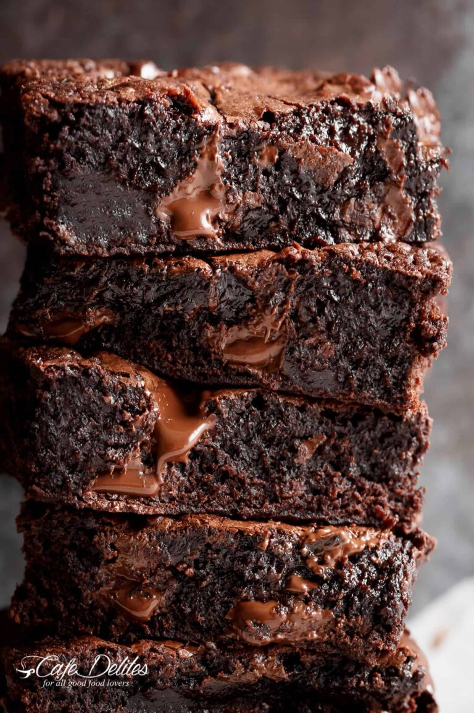

The best tasting brownies in the galaxy"
Ingredients:
- 1/2 cup unsalted butter, melted and HOT
- 1 tablespoon cooking oil, (olive oil or coconut oil are fine)
- 1 1/8 cup superfine sugar, (caster sugar or white granulated sugar)
- 2 large eggs
- 2 teaspoons pure vanilla extract
- 1/2 cup all purpose (or plain) flour
- 1/2 cup unsweetened cocoa powder
- 1/4 teaspoon salt
Instructions:
- Preheat oven to 350°F (175°C).
- Lightly grease an 8-inch square baking pan with cooking oil spray. Line with parchment paper (or baking paper); set aside.
- Combine hot melted butter, oil and sugar together in a medium-sized bowl. Whisk well for about a minute. Add the eggs and vanilla; beat until lighter in colour (another minute).
- Sift in flour, cocoa powder and salt. Gently fold the dry ingredients into the wet ingredients until JUST combined (do NOT over beat as doing so well affect the texture of your brownies).
- Pour batter into prepared pan, smoothing the top out evenly. (OPTIONAL: Top with chocolate chunks or chocolate chips.)
- Bake for 20-25 minutes, or until the centre of the brownies in the pan no longer jiggles and is just set to the touch (the brownies will keep baking in the hot pan out of the oven). If testing with a toothpick, the toothpick should come out dirty for fudge-textured brownies.
- Remove and allow to cool to room temperature before slicing into 16 brownies.
Optional add ins:
- Crushed walnuts, peanuts, almonds, pecans, chocolate chips, peanut butter chips, chocolate chunks, dried fruit (cranberries, raisins, etc)
Return to top
Return to main page